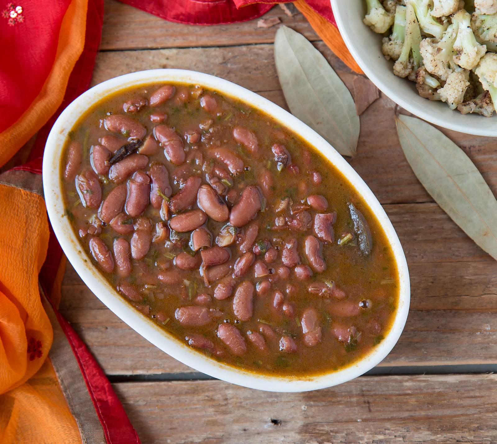

Rajma

Process:
- Wash and soak 1 cup of rajma (kidney beans) in water overnight or for at least 8 hours. Drain the water and set aside.
- In a pressure cooker, add the soaked rajma and 4 cups of water. Pressure cook for about 15-20 minutes until the beans are cooked and tender.
- In a separate pan, heat 2 tablespoons of oil. Add 1 teaspoon of cumin seeds and let them splutter.
- Add 1 finely chopped onion and sauté until it turns golden brown.
- Add 1 tablespoon of ginger-garlic paste and sauté for a minute until fragrant.
- Add 2 chopped tomatoes and cook until they become soft and mushy.
- Add 1 tablespoon of rajma masala, 1 teaspoon of turmeric powder, 1 teaspoon of red chili powder, 1 teaspoon of cumin powder, and salt to taste. Mix well.
- Add the cooked rajma along with its water to the pan. Mix well and let it simmer for 15-20 minutes, allowing the flavors to blend together.
- Garnish with chopped coriander leaves.
- Serve hot Rajma with rice or roti.
Nutrient and Calorie Values
| Nutrient |
Value |
| Calories |
300 |
| Protein |
15g |
| Fat |
8g |
| Carbohydrates |
45g |
| Fiber |
10g |